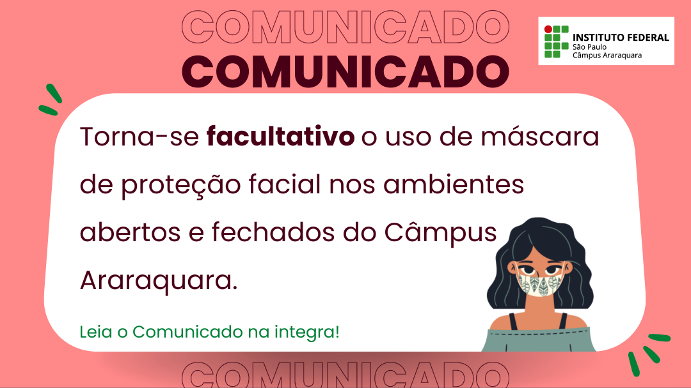

Notícias

Calendário Acadêmico
Eventos
FLISOL 2021 - FESTIVAL LATINO AMERICANO DE INSTALAÇÃO DE SOFTWARE LIVRE
O Festival Latino Americano de Instalação de Software Livre - FLISoL é um evento internacional, realizado anualmente, e que ocorre de forma simultânea em diversas cidades da América Latina. O FLISoL é um evento descentralizado, onde diversas comunidades organizam e realizam seu festival, de forma voluntária, tendo como principal objetivo promover o uso de software livre, apresentando sua filosofia, alcance, avanços e desenvolvimento ao público em geral.
Links mais procurados
Licenciatura em Matemática
Tecnologia em Análise e Desenvolvimento de Sistemas
Tecnologia em Sistemas para Internet